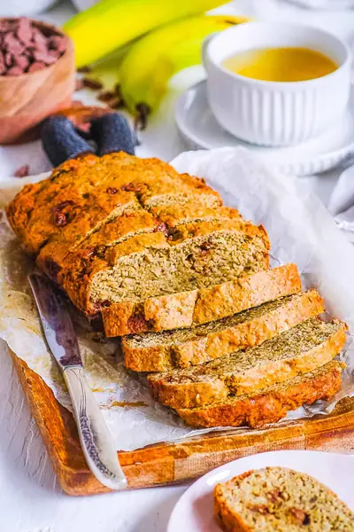

Gluten Free Chocolate Chip Banana Bread

Ingredients
- 3 large ripe bananas (mashed)
- 1 flax egg
- ⅓ cup plain lowfat Greek yogurt
- 2 tbsp melted (cooled coconut oil)
- ¼ + ⅛ cup coconut sugar
- 1 tbsp pure maple syrup
- 1 tsp vanilla extract
- 1 tsp baking soda
- ½ tsp ground cinnamon
- ¼ tsp salt
- 1½ cups GF oat flour or 1:1 gluten free flour blend
- ½ to ¾ cup 70% dark chocolate chips
Steps
- Preheat oven to 350°F. Lightly grease a 4½ inch (11cm) x 9 inch (22cm) loaf pan with olive oil spray and set aside.
- In a large bowl mash the bananas until mostly smooth. Whisk in the flax egg, then the yogurt and oil. Whisk in the coconut sugar, maple syrup, and vanilla. Sprinkle the baking soda, cinnamon, and salt over the top, then stir until combined. Gently stir in the flour until barely combined, then fold in the chocolate chips.
- Scrape the mixture into the prepared pan. Bake for 25-30 minutes, until a toothpick inserted in the center comes out clean. Remove from oven and let cool for 15 minutes. Cut into 16 slices and serve.
Recipe by Anjali Shah · The Picky Eater, from The Picky Eater. Saved here for personal use; the original has the full notes, tips and photos. Open original